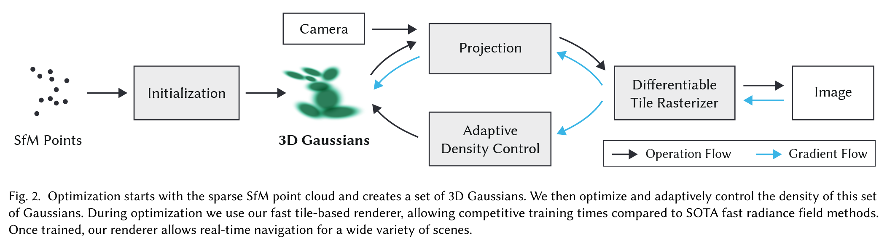

3D Gaussian Splatting for Real-Time Radiance Field Rendering#
 Code: https://github.com/graphdeco-inria/gaussian-splatting
1. Highlights#
In computer graphics, traditional methods have limitations. NeRF, for example, offers no direct visibility into geometry, appearance, or structure—making it a “black box”. It is also slow and memory-intensive.
3D Gaussian Splatting (3DGS) addresses these issues by projecting 3D Gaussians onto 2D splats, then optimizing their parameters to represent the scene. This approach enables real-time rendering with high-quality results.
2. Background#
In recent years, Neural Radiance Fields (NeRFs) [Mildenhall et al. 2020] have emerged as a powerful representation for synthesizing novel views of a scene. NeRF models use multi-layer perceptrons (MLPs) and volumetric ray marching, allowing them to model fine geometry and view-dependent color. However, NeRFs are notoriously slow — rendering even a single image can take seconds, and training can take days.
Many methods have tried to accelerate NeRFs:
Mip-NeRF360 [Barron et al. 2022] achieves state-of-the-art quality but takes ~48 hours to train.
Plenoxels [Fridovich-Keil et al. 2022] and InstantNGP [Müller et al. 2022] significantly reduce training time, but still struggle to render at real-time speeds for 1080p images.
These trade-offs raise a central question:
üí° Can we achieve both real-time rendering and high quality radiance field representation ‚Äî without sacrificing speed or memory?
This paper proposes a new paradigm: 3D Gaussian Splatting. which means gaussian can be splatted like snow ball from 3D space to 2D image. Instead of voxel grids or MLPs, the authors represent scenes using a set of anisotropic 3D Gaussians in world space. These Gaussians can be:
Projected to 2D splats for efficient rasterization,
Differentiably optimized,
Interleaved with adaptive density control, adding/removing Gaussians as needed.
3.Method Overview#
A 3D Gaussian can be defined in Euclidean space by its center \(\mu \in \mathbb{R}^3\) and covariance matrix \(\Sigma \in \mathbb{R}^{3 \times 3}\):
This Gaussian defines a soft ellipsoidal shape, whose geometry is governed by \(\Sigma\). Instead of optimizing \(\Sigma\) directly, which may break symmetry or positive semi-definiteness, it is factored as:
where \(R\) is a rotation matrix (often represented via a quaternion) and \(S\) is a diagonal scaling matrix. This ellipsoidal representation supports anisotropy and remains physically valid during optimization.
To project the 3D Gaussian onto the 2D image plane (i.e., rasterization), the covariance is transformed by the Jacobian \(J\) of the camera projection and world-to-camera transformation \(W\):
This results in a 2D Gaussian splat, whose shape adapts to the viewing angle, allowing tile-based sorting and fast alpha blending.
The appearance of each point is encoded using Spherical Harmonics (SH) up to degree \(L\). This allows compact modeling of view-dependent color:
where \(Y_{lm}\) are SH basis functions and \(c_{lm}\) the learned coefficients per Gaussian.
For rendering, an alpha-blended formulation similar to volumetric raymarching is used:
This equation is implemented efficiently by sorting Gaussians in tiles, blending front-to-back. Unlike NeRF, no ray marching is needed.
Optimization is performed on position \(\mu\), rotation \(R\), scale \(S\), opacity \(\alpha\), and SH coefficients \(c_{lm}\). To avoid the overhead of autodiff on custom CUDA rasterizers, gradients are manually derived.
The pipeline begins with SfM points. Each is initialized as a Gaussian. During training, densification adds more Gaussians by cloning or splitting. Gaussians are pruned or merged using view-space statistics.
Antialiasing is inherently supported through the smooth falloff of each Gaussian splat in screen space. There is no hard surface discontinuity, and resolution-independence is naturally achieved through continuous alpha blending.
This model leads to a fast and differentiable pipeline for radiance field rendering, achieving real-time frame rates with state-of-the-art quality.
References#
Mildenhall et al., NeRF: Representing Scenes as Neural Radiance Fields, ECCV 2020
Barron et al., Mip-NeRF360: Unbounded Anti-Aliased Neural Radiance Fields, CVPR 2022
Fridovich-Keil et al., Plenoxels: Radiance Fields without Neural Networks, CVPR 2022
Müller et al., InstantNGP: Instant Neural Graphics Primitives, SIGGRAPH 2022
Zwicker et al., EWA Volume Splatting, IEEE Vis 2001
Start GUI for Real-Time Visualization#
During training, a GUI server is used to visualize intermediate renderings. Start it with:
python gui_server.py --ip 127.0.0.1 --port 6009
import sys
import os
current_dir = os.path.dirname(os.path.abspath("__file__")) if "__file__" in locals() else os.getcwd()
gs_code_dir = os.path.abspath(os.path.join(current_dir, '../../../code/GS/gaussian-splatting-main'))
if gs_code_dir not in sys.path:
sys.path.append(gs_code_dir)
print(f"✅ Added {gs_code_dir} to sys.path")
import torch
from random import randint
from utils.loss_utils import l1_loss, ssim
from gaussian_renderer import render, network_gui
import sys
from scene import Scene, GaussianModel
from utils.general_utils import safe_state, get_expon_lr_func
import uuid
import matplotlib.pyplot as plt
from tqdm import tqdm
from utils.image_utils import psnr
from argparse import ArgumentParser, Namespace
from arguments import ModelParams, PipelineParams, OptimizationParams
try:
from torch.utils.tensorboard import SummaryWriter
TENSORBOARD_FOUND = True
except ImportError:
TENSORBOARD_FOUND = False
try:
from fused_ssim import fused_ssim
FUSED_SSIM_AVAILABLE = True
except:
FUSED_SSIM_AVAILABLE = False
try:
from diff_gaussian_rasterization import SparseGaussianAdam
SPARSE_ADAM_AVAILABLE = True
except:
SPARSE_ADAM_AVAILABLE = False
from train import prepare_output_and_logger,training_report
from argparse import ArgumentParser
# 手动模拟命令行参数
sys.argv = ['']
# Set up command line argument parser
parser = ArgumentParser(description="Training script parameters")
lp = ModelParams(parser)
op = OptimizationParams(parser)
pp = PipelineParams(parser)
parser.add_argument('--ip', type=str, default="127.0.0.1")
parser.add_argument('--port', type=int, default=6009)
parser.add_argument('--debug_from', type=int, default=-1)
parser.add_argument('--detect_anomaly', action='store_true', default=False)
parser.add_argument("--test_iterations", nargs="+", type=int, default=[7_000, 30_000])
parser.add_argument("--save_iterations", nargs="+", type=int, default=[7_000, 30_000])
parser.add_argument("--quiet", action="store_true")
parser.add_argument('--disable_viewer', action='store_true', default=False)
parser.add_argument("--checkpoint_iterations", nargs="+", type=int, default=[])
parser.add_argument("--start_checkpoint", type=str, default = None)
args = parser.parse_args(sys.argv[1:])
args.save_iterations.append(args.iterations)
print("Optimizing " + args.model_path)
# Initialize system state (RNG)
safe_state(args.quiet)
# Start GUI server, configure and run training
if not args.disable_viewer:
network_gui.init(args.ip, args.port)
torch.autograd.set_detect_anomaly(args.detect_anomaly)
# 参数对应展开（xxx = yyy 形式）
dataset = lp.extract(args)
opt = op.extract(args)
pipe = pp.extract(args)
testing_iterations = args.test_iterations
saving_iterations = args.save_iterations
checkpoint_iterations = args.checkpoint_iterations
checkpoint = args.start_checkpoint
debug_from = args.debug_from
if not SPARSE_ADAM_AVAILABLE and opt.optimizer_type == "sparse_adam":
sys.exit(f"Trying to use sparse adam but it is not installed, please install the correct rasterizer using pip install [3dgs_accel].")
first_iter = 0
tb_writer = prepare_output_and_logger(dataset)
gaussians = GaussianModel(dataset.sh_degree, opt.optimizer_type)
scene = Scene(dataset, gaussians)
gaussians.training_setup(opt)
if checkpoint:
(model_params, first_iter) = torch.load(checkpoint)
gaussians.restore(model_params, opt)
bg_color = [1, 1, 1] if dataset.white_background else [0, 0, 0]
background = torch.tensor(bg_color, dtype=torch.float32, device="cuda")
iter_start = torch.cuda.Event(enable_timing = True)
iter_end = torch.cuda.Event(enable_timing = True)
use_sparse_adam = opt.optimizer_type == "sparse_adam" and SPARSE_ADAM_AVAILABLE
depth_l1_weight = get_expon_lr_func(opt.depth_l1_weight_init, opt.depth_l1_weight_final, max_steps=opt.iterations)
viewpoint_stack = scene.getTrainCameras().copy()
viewpoint_indices = list(range(len(viewpoint_stack)))
ema_loss_for_log = 0.0
ema_Ll1depth_for_log = 0.0
progress_bar = tqdm(range(first_iter, opt.iterations), desc="Training progress")
first_iter += 1
for iteration in range(first_iter, opt.iterations + 1):
if network_gui.conn == None:
network_gui.try_connect()
while network_gui.conn != None:
try:
net_image_bytes = None
custom_cam, do_training, pipe.convert_SHs_python, pipe.compute_cov3D_python, keep_alive, scaling_modifer = network_gui.receive()
if custom_cam != None:
net_image = render(custom_cam, gaussians, pipe, background, scaling_modifier=scaling_modifer, use_trained_exp=dataset.train_test_exp, separate_sh=SPARSE_ADAM_AVAILABLE)["render"]
net_image_bytes = memoryview((torch.clamp(net_image, min=0, max=1.0) * 255).byte().permute(1, 2, 0).contiguous().cpu().numpy())
network_gui.send(net_image_bytes, dataset.source_path)
if do_training and ((iteration < int(opt.iterations)) or not keep_alive):
break
except Exception as e:
network_gui.conn = None
iter_start.record()
gaussians.update_learning_rate(iteration)
# Every 1000 its we increase the levels of SH up to a maximum degree
if iteration % 1000 == 0:
gaussians.oneupSHdegree()
# Pick a random Camera
if not viewpoint_stack:
viewpoint_stack = scene.getTrainCameras().copy()
viewpoint_indices = list(range(len(viewpoint_stack)))
rand_idx = randint(0, len(viewpoint_indices) - 1)
viewpoint_cam = viewpoint_stack.pop(rand_idx)
vind = viewpoint_indices.pop(rand_idx)
# Render
if (iteration - 1) == debug_from:
pipe.debug = True
bg = torch.rand((3), device="cuda") if opt.random_background else background
render_pkg = render(viewpoint_cam, gaussians, pipe, bg, use_trained_exp=dataset.train_test_exp, separate_sh=SPARSE_ADAM_AVAILABLE)
image, viewspace_point_tensor, visibility_filter, radii = render_pkg["render"], render_pkg["viewspace_points"], render_pkg["visibility_filter"], render_pkg["radii"]
if viewpoint_cam.alpha_mask is not None:
alpha_mask = viewpoint_cam.alpha_mask.cuda()
image *= alpha_mask
# Loss
gt_image = viewpoint_cam.original_image.cuda()
Ll1 = l1_loss(image, gt_image)
if FUSED_SSIM_AVAILABLE:
ssim_value = fused_ssim(image.unsqueeze(0), gt_image.unsqueeze(0))
else:
ssim_value = ssim(image, gt_image)
loss = (1.0 - opt.lambda_dssim) * Ll1 + opt.lambda_dssim * (1.0 - ssim_value)
# Depth regularization
Ll1depth_pure = 0.0
if depth_l1_weight(iteration) > 0 and viewpoint_cam.depth_reliable:
invDepth = render_pkg["depth"]
mono_invdepth = viewpoint_cam.invdepthmap.cuda()
depth_mask = viewpoint_cam.depth_mask.cuda()
Ll1depth_pure = torch.abs((invDepth - mono_invdepth) * depth_mask).mean()
Ll1depth = depth_l1_weight(iteration) * Ll1depth_pure
loss += Ll1depth
Ll1depth = Ll1depth.item()
else:
Ll1depth = 0
loss.backward()
iter_end.record()
with torch.no_grad():
# Progress bar
ema_loss_for_log = 0.4 * loss.item() + 0.6 * ema_loss_for_log
ema_Ll1depth_for_log = 0.4 * Ll1depth + 0.6 * ema_Ll1depth_for_log
if iteration % 10 == 0:
progress_bar.set_postfix({"Loss": f"{ema_loss_for_log:.{7}f}", "Depth Loss": f"{ema_Ll1depth_for_log:.{7}f}"})
progress_bar.update(10)
if iteration == opt.iterations:
progress_bar.close()
# Log and save
training_report(tb_writer, iteration, Ll1, loss, l1_loss, iter_start.elapsed_time(iter_end), testing_iterations, scene, render, (pipe, background, 1., SPARSE_ADAM_AVAILABLE, None, dataset.train_test_exp), dataset.train_test_exp)
if (iteration in saving_iterations):
print("\n[ITER {}] Saving Gaussians".format(iteration))
scene.save(iteration)
# Densification
if iteration < opt.densify_until_iter:
# Keep track of max radii in image-space for pruning
gaussians.max_radii2D[visibility_filter] = torch.max(gaussians.max_radii2D[visibility_filter], radii[visibility_filter])
gaussians.add_densification_stats(viewspace_point_tensor, visibility_filter)
if iteration > opt.densify_from_iter and iteration % opt.densification_interval == 0:
size_threshold = 20 if iteration > opt.opacity_reset_interval else None
gaussians.densify_and_prune(opt.densify_grad_threshold, 0.005, scene.cameras_extent, size_threshold, radii)
if iteration % opt.opacity_reset_interval == 0 or (dataset.white_background and iteration == opt.densify_from_iter):
gaussians.reset_opacity()
# Optimizer step
if iteration < opt.iterations:
gaussians.exposure_optimizer.step()
gaussians.exposure_optimizer.zero_grad(set_to_none = True)
if use_sparse_adam:
visible = radii > 0
gaussians.optimizer.step(visible, radii.shape[0])
gaussians.optimizer.zero_grad(set_to_none = True)
else:
gaussians.optimizer.step()
gaussians.optimizer.zero_grad(set_to_none = True)
if (iteration in checkpoint_iterations):
print("\n[ITER {}] Saving Checkpoint".format(iteration))
torch.save((gaussians.capture(), iteration), scene.model_path + "/chkpnt" + str(iteration) + ".pth")
Key Design Concepts in the Code#
This code implements supervised, explicit, and differentiable 3D Gaussian Splatting. Below are the highlights:
1. Explicit Representation
gaussians = GaussianModel(dataset.sh_degree, opt.optimizer_type)
Scene is modeled as a list of 3D Gaussians.
Each has position, scale, rotation, color (SH), opacity.
Unlike NeRF, this is fully inspectable and editable.
2. Supervised Learning
gt_image = viewpoint_cam.original_image.cuda()
Ll1 = l1_loss(image, gt_image)
ssim_value = ssim(image, gt_image)
loss = (1.0 - opt.lambda_dssim) * Ll1 + opt.lambda_dssim * (1.0 - ssim_value)
Uses ground truth RGB image.
Supervised loss: L1 + SSIM.
3. Differentiable Rasterization
rendered_image, radii, depth_image = rasterizer(...)
Core rendering happens here using
GaussianRasterizer.Each 3D Gaussian is:
Projected to 2D using camera matrices
Transformed to 2D ellipses using covariance
Blended into the final image using alpha compositing
return _RasterizeGaussians.apply(...)
This invokes a CUDA kernel that performs the splatting.
It’s differentiable, so gradients can flow through projection and blending.
This rasterization is not neural — it’s analytical and explicit, yet fully integrated into the training loop.
4. Dynamic SH Complexity
if iteration % 1000 == 0:
gaussians.oneupSHdegree()
Increases SH degree during training.
Allows progressive complexity in color modeling.